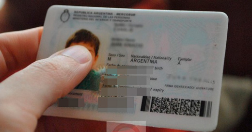

Ciudad de La Plata
¿Quiénes somos?
Desde el Departamento de Turismo de la Ciudad de La Plata (DTCLP) te traemos de manera organizada, hecha por vecinos para vecinos, la información que necesitás para recorrer ¡la cuidad de las diagonales!. En familia, con amigos, o vos mismo podés pasar por los lugares turísticos, como la Plaza Moreno, el Bosque, o ir a comer a los diversos restaurantes por toda la ciudad, donde podrás encontrar comidas de todo el mundo.
El objetivo de este sitio es poder crear más iniciativa por parte de los platenses para conocer y recorrer su propia ciudad en estas vacaciones, pudiendo conservar el nivel de turismo "movido" durante este verano del 2023 ya que se estima que, según la encuesta del diario "Progresar", el 70% de los platenses se van de vacaciones a otra ciudad cuando, a la vez, esta cantidad solo conoce menos del 30% de los lugares turísticos platenses. Entender nuestra cultura, historia, sociedad, diversidad y naturaleza nos forma como seres humanos a la hora de crear nuestra identidad.¡Animate a conocer tu ciudad!
Si tenés alguna duda, consulta o te interesa en aportar información sobre turismo no dudes en comunicarte por nuestras redes sociales o a través del formulario de nuestra página, sin más y ni menos, ¡a disfrutar!
Atención a Ciudadanos
Antes de seguir, si sos ciudadano residente en La Plata y alrededores, acordate que tenés 40% de descuento en la entrada de los eventos estatales de la ciudad. Solo basta presentando tu DNI dónde figure la dirección dentro del perímetro de la ciudad y los municipios de alrededor. Si tenés alguna consulta enviala a través del formulario de la página. Para mas información visitar en tus beneficios.

Video Informativo de La Plata
Video informativo sobre la ciudad de la plata donde destaca los lugares y datos más interesantes de la ciudad sobre las diagonales.